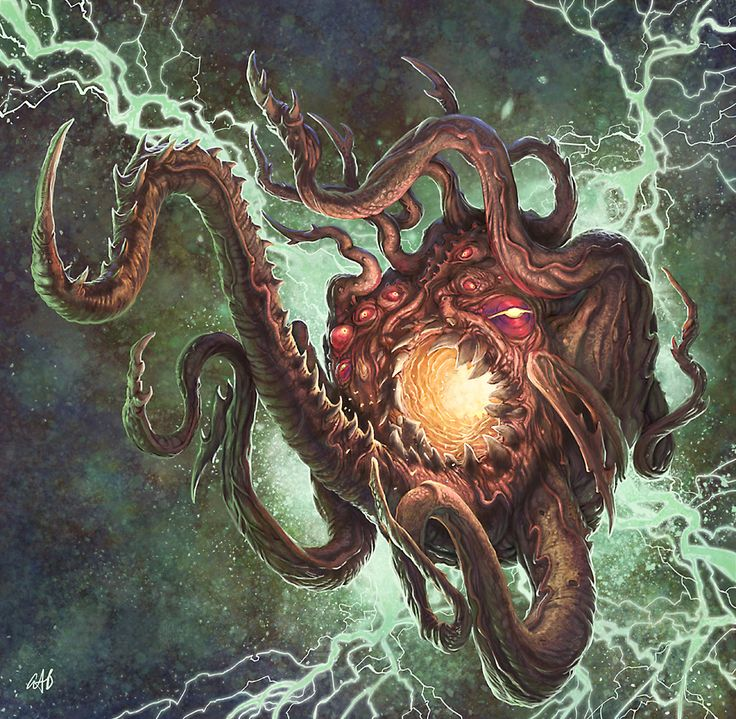

В чёрно бездне за гранью Вселенной, на ониксовом троне восседает слепой и безумный султан-демон Азатот. Он - абсолютный ядерный хаос, повелевающий временем и пространством. Бесформенный кошмар, лишённый жалости, что мерзко клубится и бурлит в самом центре бесконечности, убаюканный монотонным воем пронзительных флейт и оглушительным грохотом барабанов.
Путь тех, кто преступил грань миров, лежит к его сумрачному трону, но приблизиться к нему и произнести имя вечно грызущего и бесконечно ненасытного Азатота не посмеет ни один. И горе тем, кого направит к нему Ньярлатхотеп, коварный посланник слепых и безликих Иных богов, что нелепо пританцовывают под сводящую с ума мелодию Азатота.
Впервые его имя упомянуто в названии рассказа Г.Ф. Лавкрафта "Азатот"(Azathoth, 1922), после чего - в повести "Сновидческие искания неведомого Кадата"(The Dream-Quest of Unknown Kadath, 1927) и рассказе "Сны в Ведьмином доме"(The Dreams in the Witch House, 1932).
